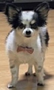

自己紹介

私の名前はシェリー。
いつもムスッとした顔をしているけど、実は甘えん坊なんだワン。
眉間にシワを寄せているのは、生まれつきなんだ。
もう虹の橋を渡ってしまったけど、ご主人たちに愛されていた幸せな犬生だったワン。
ただ、この状態になってもご主人は、チョコレートをくれないので、天国でもイライラ顔になっちゃうんだ。
でも本当は、いつも幸せな気持ちでいっぱいだったんだよ。
天国から見ていると、ご主人たちが私の写真を見ながら笑ったり泣いたりしているのが見えるんだ。
私のLINEスタンプを使って友達と会話してるのを見ると、尻尾が勝手に振れちゃうワン！
たまに夢の中でご主人たちに会いに行くんだ。そのときはいつものように台所で警備したり、真ん中でベッドを占領したり...
虹の橋の上からご主人たちを見守っているけど、本当はまだまだ一緒にいたかったなぁ。
でもね、ここで待っていれば、いつかまた会えると信じているんだ。
その時は絶対にチョコレートをねだるんだからね！（でもダメだってことは分かってるワン...）
そしてある日、天国から見ていた私は知ったんだ。
ご主人たちのもとに、新しい家族がやってきたことを。
ふわふわの毛並みが陽の光を受けてきらめく、シャンパンゴールドの小さなチワワ。
その瞳には、私と同じようにご主人を大好きになる未来が映っていた。
嬉しい気持ちと少しの寂しさが混じったけれど、何よりも、ご主人たちがまた笑顔になれることが嬉しかった。
私は虹の橋の上から、尻尾をぶんぶん振ってこうつぶやくんだ。
「いらっしゃい、新しい仲間。これからご主人たちを、いっぱい幸せにしてあげてね。」
そして私は、少し誇らしい気持ちで、また空の上から見守り続けるんだワン。
私の名言
- 1: 台所と書いて、トイレと読む
- 2: ご主人のベッドは、私が中央
- 3: 犬用の家を買っても無駄！
YOUTUBE
警備携帯バイブ
LINEスタンプ
チワシェリーannoyed dog